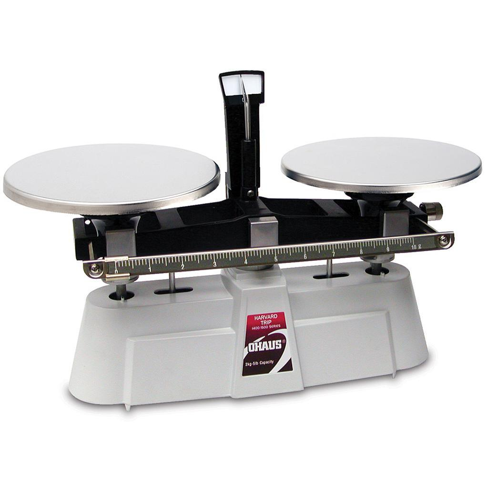

- Junior / entry level
- Web Development
- Part‑time / full‑time / contract
- Front‑end / back‑end / full‑stack
- Entry / junior level
- Greater Seattle area
- Remote OK
- US Citizen
- Work eligible in Korea
Ideal job Job in which I know I am making a positive impact on this world.
Reason for coding It's like solving a puzzle or playing a strategy game. In situations where the solution set can seem infinitely big, one can arrive at the correct one (or at least the optimal one) by breaking down the problem, logically reconnecting the pieces. I like that.
Strengths & weaknesses & remedy During the course of weeks or months, I had periods in which I was super productive. Of course the downside of this is it sometimes led to a period of low productivity. I found that coming up with a strict schedule to abide by and maximizing my break and relaxation was the key to maintaining productivity homeostasis.
Current project Rebuilding Steps Education from ground up with Vue, and other more modern frameworks and tools;
Interests Technology, business, politics, education, environments
Hobbies Solving puzzles, Vainglory, keeping up with current events (especially about my interests), walking dog, running, and spending time with friends and family
Based in greater Seattle region.
Early years
I was good at both Western and Chinese chess. I loved writing, debates, folding origami, and math.
College
Initially I was attracted to physics (one of my favorite subjects from high school), but I eventually chose math as my focus. There was something more fundamental about math than physics.
While studying math, I took all the computer science for non-major students. This includes basic programming course in which we learned Java, Object Oriented Programming paradigm, basic data structures and algorithm. At a more advanced level, we learned algorithm run times, and more sophisticated algorithms.
It around my later years in college that I started to teach math as a side job to supplement my income.
I was an officer for Korean Student Association for four years, in which I spent two years as webmaster.
Move to Korea
Due to personal reason I quit school to move to Korea.
I started teaching as a private tutor while looking for a more permanent position, but found that there was a lot of market potential as a tutor, and became a full time tutor.
Steps Education
After teaching math for a while, it became obvious to me that a lot of what I did could be automated: generating problems, grading them, analyzing them, and telling parents about their students' performance.
I used my programming skills to make independent apps and tools that met its objectives.
When my apps started accumulate, I realize the need to centralize and integrate the apps. Hence Steps Education was born.
Back to the States
While in Korea, I met my wife, and had my son. I realized I didn't want to raise my son in Korea, so I quit everything and moved back to the states.
I'm currently in search of a new opportunity in which I can be an asset to a company that presents unique and exciting challenges.
This is a small selection of work that I feel best illustrates my ability and potential as a software developer.
I believe my work will portray me as a concise and succinct problem solver and a software devloper. The following work mostly uses jQuery for GUI, but they will be transitioned to Vue. Other than jQuery, I used Highlight.JS for syntax highlighting.
All the my work listed here can also be found on GitHub.
PrecisionJS is a JavaScript library that I developed after realizing that
in JavaScript, 0.1 + 0.2 === 0.3; returned false.
It took me a while to learn the details of why that happend. Whatever
the reason was, as a platform that provided teaching service, I
needed something that could handle arithmetic with precision.
I originally named the library PreMath (short for Precision Math), but eventually decided to just go with PrecisionJS.
PrecisionJS's math library can perform some fairly simple math operations, such as finding the greatest common factors of a set of numbers, factorial or combination.
Precision.Number is an object constructor that takes in an input, parses it, and stores the number in an object as arrays of numerator and denominator. It can perform arbitrary precision math, meaning it can be as long as the user needs it to be.
For the complete API with examples, please visit my GitHub Precision page. Alternatively, you can simply open the console on your browser to test it out on this page.
// Greatest common factor
Precision.gcf(4, 8); // 4
let arr = [30, 45, 60, 120];
Precision.gcf(...arr); // 15// factorial
let f = Precision.factorial(500);
f.length; // 1135
f; /* =>
"1220136825991110068701238785423046926
2535743428031928421924135883858453731
5388199760549644750220328186301361647
7148203584163378722078177200480785205
1593292854779075719393306037729608590
8627042917454788242491272634430567017
3270769461062802310452644218878789465
7547771498634943677810376442740338273
6539747138647787849543848959553753799
0423241061271326984327745715546309977
2027810145610811883737095310163563244
3298702956389662891165897476957208792
6928871281780070265174507768410719624
3903943225364226052349458501299185715
0124870696156814162535905669342381300
8856249246891564126775654481886506593
8479517753608940057452389403357984763
6394490531306232374906644504882466507
5946735862074637925184200459369692981
0222639719525971909452178233317569345
8150855233282076282002340262690789834
2451712006207714640979456116127629145
9512372299133401695523638509428855920
1872743379517301458635757082835578015
8735432768888680120399882384702151467
6054454076635359841744304801289383138
9688163948746965881750450692636533817
5055478128640000000000000000000000000
0000000000000000000000000000000000000
0000000000000000000000000000000000000
0000000000000000000000000"
*/// Change 500 from base-10 to base-4
Precision.changeBase(500, 10, 4); // "13310"// Precision Number
let n1 = new Precision.Number('0.1');
let n2 = nwe Precision.Number('0.2');
n1.plus(n2).equals('0.3'); // true; simply amazing
let n3 = new Precision.Number('0...3'); // 0.3333333....
n3.equals('0.33333333333333'); // false
n3.equals('1/3'); // true
n3.divBy(10).equals('0.0...3'); // true (0.0...3 => 0.03333....)
let n4 = new Precision.Number('-2 4/5');
n4.plus('4/5').equals('-2'); // true;
n4.negate().equals('2'); // true;
n4.times(0).equals('0'); // true;KenKen is akin to sodoku, but with a mathematical twist. For an n × n puzzle, the rules are as follows:
- For any given column or row, numbers 1 through n, inclusive, must be used exactly once.
- The numbers inside a set of cells bounded by thick outline, called cages, must evaluate to a given number, called target, when a given operation is performed.
My puzzle solver finds a solution (there may be more than one for some puzzles) after a user inputs the constraints.
- For puzzle size, input a number from 1 through 9 to set cages. Alternatively, you can simply click one of the sample puzzles to start.
- After you set the size, click a cluster of contiguous cells, and click "SET CAGE". Then input the target number and operation.
- For any of the input areas, user can press ESC button to delete the content. For operation input, you may press up/down arrow keys to select from one of four valid entries. Finally, user can press enter to submit input.
When students first come across single variable equations,
such as 5(x + 2) = 25, the first instinct
is to "work backwards." Such approach may work for elementary or
introductory equations, but quickly becomes unviable as soon as
small complication arises. For example,
3x + 5 = -2x - 15 is a bit difficult to
intuitively "work backwards." Also, the idea of working backwards
arises mainly from the notion that there's an "answer" to a
question, which students have become accustomed to at that point.
Because of it, it demonstrates and perpetuates poor understanding
of the state of equality of two expressions on both sides the equal
sign.
In order to remedy this, I have implemented a GUI that is analogous to a double pan balance scale.
By applying same operations to both scales -- adding something, removing something, or multiplying or dividing the content of the scales by a certain number -- the two arms of the scale will remain balanced.
- The goal is to achieve a state where there's only x left on one side, and number left in the other side.
- The tiled numbers or x must be dragged to the scales (lower left and lower right rectangles) equally in order to maintain equality
- To make number n such that |n| > 10, drag the number tiles to the top middle region to combine them.
- x and -x must dragged individually to each scale.
The collaborative work of Wikipedians describes this problem best:
A knight's tour is a sequence of moves of a knight on a chessboard such that the knight visits every square only once.
The algorithm for finding the knight's path technically uses recursion to exhaustively search for the solution. The "brute force" method has a search space of roughly 26.5 trillion moves, by employing Warnsdorff's rule and Arnd Roth's proposition for tie breaking, a solution to a 8x8 board can be found in linear time.
Click anywhere on the board to find the solution starting from that cell. Click next or prev to make the knight move to next or previous move, respectively.